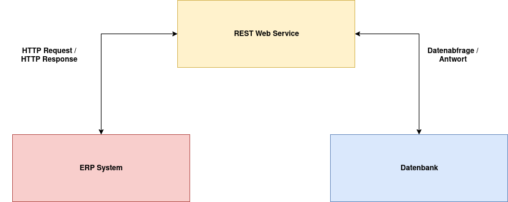
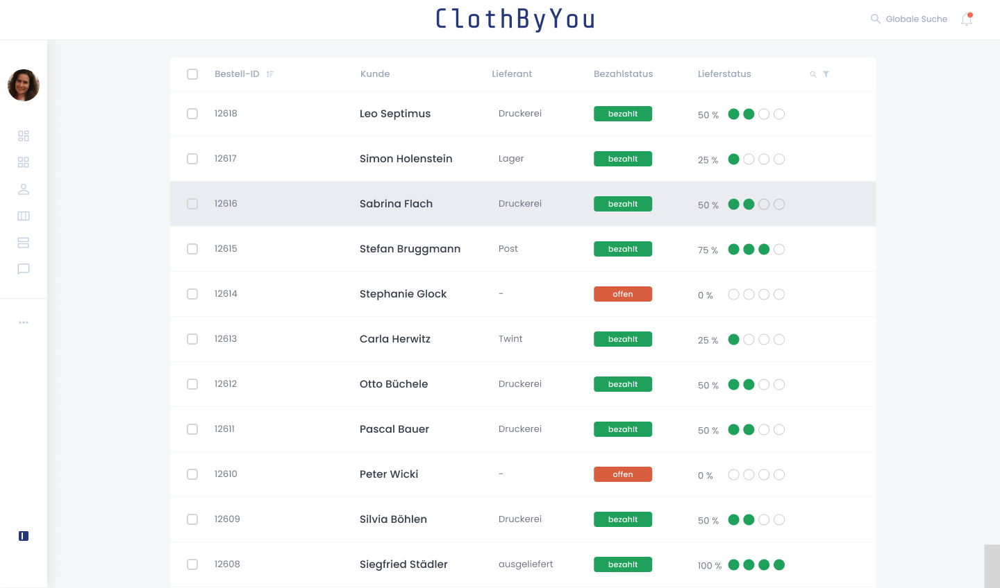

Die Daten in den vorliegenden Mockups kommen aus Datenbanksystemen. Um an diese Daten zu gelangen, wird eine REST-Schnittstelle, bzw. ein REST Web Service verwendet. Die REST-Schnittstelle erlaubt es einen HTTP Request mit einer spezifischen URL Codierung an den REST Web Service zu schicken. Dieser nimmt dann den Request entgegen und weiss an Hand der Codierung in der URL, welche Daten er bei der Datenbank abfragen muss. Die angeforderten Daten gibt er anschliessend via HTTP Request an den Aufrufer zurück.
Folgend wird unser internes ERP-System aus der Sicht einer Administratorin abgebildet. Auf der ersten Abbildung wird das Dashboard dargestellt, dies ist die Startansicht beim öffnen des ERP-Systems. Die Darstellung entspricht der Ansicht mit allen Zugriffsberechtigungen. Auf der linken Seite werden Benutzerinformationen dargestellt. Alle Benutzenden verfügen über individuell bestimmte Zugriffsberechtigungen, welche definieren was angezeigt wird und was nicht. Die Kernbereiche des ERP-Systems sind:
Nach einem Klick auf die Kategorie “Bestellungen”, landet unsere System-Administratorin auf der “Bestellübersicht”. Hier werden viele wichtige und relevante Informationen angezeigt. In diesem Bereich fliessen alle Daten zusammen und geben Auskunft über den Prozess der einzelnen Bestellungen. Jede Bestellung hat eine Bestell-ID, diese kommt direkt aus unserer Bestelldatenbank. Zudem ist jede Bestellung einem Kunden zugeordnet. Der Name der Kunden kommt aus der Kundendatenbank. Der Lieferant, welcher die Bestellung zurzeit bearbeitet, wird aus unserer Lieferantendatenbank herangezogen. Ebenfalls eine wichtige Information ist der Bezahlstatus. Diese Information kommt von unseren externen Zahlungspartnern und gelangt via Enterprise Service Bus zu uns. Zu Guter letzt, bietet die Spalte “Lieferstatus” eine Übersicht zum Fortschritt der aktuellen Auftragsabwicklung.
Mehr Informationen zu den einzelnen Bestellungen erhält die Benutzerin über die Detailansicht. Diese wird geöffnet sobald auf eine Spalte für eine bestimmte Bestellung geklickt wird. Hier werden sämtliche Detailinformationen zu einer Bestellung angezeigt. Die Informationen wie Produktkategorie, Menge, Grösse, Farbe und Design kommen aus unserer Produktdatenbank. Die Bemerkungen wiederum aus unserer Bestelldatenbank. Die Detailinformationen zum aktuellen Lieferanten werden von der Lieferantendatenbank geliefert. Interessant sind auch die Details zum Lieferstatus, dies ist eine Übersicht historischer “Checkpoints”. Diese Informationen liefern uns die externen Partner, ebenfalls über eine Enterprise Service Bus Schnittstelle. Mit Hilfe dieser Informationen ist es uns auch möglich, einen Fortschrittsbalken bezüglich des Lieferstatus zu generieren. Dieser Fortschrittsbalken ist auf folgenden Teilbereichen aufgebaut:
Unsere Mockups wurden mit dem Tool Figma erstellt. Unten ist noch eine interaktive Version unseres Mockups als iFrame zum Ausprobieren eingebunden